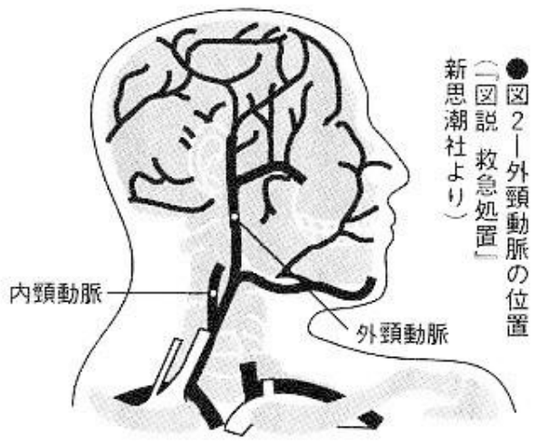

4. Cutting the wrist and carotid#

| Pain | ▼▼▽▽▽ |
| Trouble | ▼▽▽▽▽ |
| Ugliness | ▼▽▽▽▽ |
| Ripple | ▼▼▽▽▽ |
| Impact | ▼▽▽▽▽ |
| Lethality | ▼▽▽▽▽ |
Although I have dismissed wristcutting as good for nothing except a mere taste of suicide, rather than suicide for real, it is possible to die from it. This is one of the most peaceful ways to die even if it works, and be prepared for failure, which is likely.
| Pain | ▼▼▽▽▽ |
| Trouble | ▼▽▽▽▽ |
| Ugliness | ▼▼▼▽▽ |
| Ripple | ▼▼▼▼▽ |
| Impact | ▼▼▼▼▽ |
| Lethality | ▼▼▽▽▽ |
Want to know what it’s like to have your own blood fountaining all the way to the ceiling? But it’s too scary, and the chance of failure is still high, so it’s not a good method.
| Pain | ▼▼▼▼▼ |
| Trouble | ▼▼▽▽▽ |
| Ugliness | ▼▼▼▼▽ |
| Ripple | ▼▼▼▼▽ |
| Impact | ▼▼▼▼▼ |
| Lethality | ▼▼▽▽▽ |
Seppuku has absolutely no benefits, except that it’s rare and shocking, but why do people keep doing this? It is inexplicable.
Cutting the wrists and carotid#
In the middle of the night, alone in your room put a knife to your wrist and mark some lines as if just testing it out. It doesn’t matter whether you die or not.
If you have really thought about death, you have probably had this kind of experience at least once. If you put a knife across your neck, you can also experience the thrill of death. Cutting your wrists is the simplest way to experience the air of suicide on the spot. At the same time, you can observe with your own body and eyes and understand the entire process of pain and death. Known as “wristcutting syndrome” in the 1960s, this method of suicide was extremely popular in the United States, then spread to Europe, and finally Japan. Recently, after singer Akina Nakamori[1] slit her wrists, “Akina Syndrome”, a disease in which young women have slit their wrists one after another in discos around Roppongi, has become one of the most fashionable suicide methods nowadays.
However, I would not recommend this method to someone who really wants to commit suicide. Because there is an opinion that the mortality rate of wrist cutting is only 5%. Although the method is popular, the attempt rate is high. Having said that, it is not correct to insist that “you will never die if you cut your wrists.” If the foregoing figures are to be believed, one in 20 people will die from this method. A former prosecutor also said: “Not many people die from excessive bleeding just by cutting their wrists.” This chapter is written for those who hope to become the 5%.
Of course, it doesn’t matter if you don’t intend to die in the first place but just want to experience suicidal emotions and cut your wrists. As long as you don’t cause trouble to others, there is no reason for others to criticize you for that. Furthermore, just like slitting the wrists, there are other ways to maim the body with a bladed object and cause massive bleeding to death, such as cutting the carotid artery, stabbing the chest, or committing seppuku. These self-mutilation behaviors also result in death due to bleeding, so they are introduced together in this chapter.
Preparation#

Wrist – cut it through!#
Whether cutting the wrist or carotid artery, a sharp knife is enough. Kitchen knives, razors, paper knives, etc., anything sharp will do. When cutting your wrists, it is best to drink some alcohol first and then take a shower to speed up blood circulation. Also, in order to prevent the bleeding from stopping, you should soak your hands in warm water or place them in a basin after cutting, otherwise the blood will coagulate and block the wound. However, it is the unanimous opinion of doctors that as long as the artery is cut in the wrist, death will occur. Some professional doctors said: “If you cut open half of the artery, you can die. If you cut more than half of the artery, it will no longer be blocked.”
It is also important to confirm the location of the cut in advance. If you want to slit your wrist, you should turn the palm of the less dexterous hand up, and observe your wrist carefully. Feel for a pulsing point on the inside of the hand joint. That is the radial artery. Cut there. There are two oblique veins between the hand artery and the skin, which cross the radial artery exactly at the creasing point on the wrist. In order to see their relative positions more clearly, you might as well press the armpit firmly to make the veins protrude. If you just cut the vein without doing anything else, the blood flow will stop naturally at about 200 to 300 c.c., and you will not die. However, even with this, a considerable amount of blood was shed, and this sight would often make one no longer want to die.
Aiming at the artery under the skin that is not covered by the vein, and cutting it horizontally, will only cut veins, not arteries. The arteries are six to seven millimeters below the skin (see Figure 1), which is deeper than it looks. The artery must be pierced and several cuts must be made. Even if you aim just right like this, when you actually cut, you will likely cut the median nerve next to it, which is very painful. It may be possible to avoid the nerve by cutting lengthwise to the artery, but it will be difficult, because the artery and the nerve are too close. If you truly want to die, then you should prepare to endure the pain and cut the nerve and tendon together. Even if you survive the attempt, nerves and tendons could be reattached at the hospital. The ulnar artery has the same thickness, and is on the opposite side of the pulsing point, so it is better to cut it at the same time. In short, if you don’t have the determination to cut off your wrist, you won’t die.
Also, consider checking the position of the watch strap in case a suicide attempt leaves scars.
Carotid artery – puncture and then pull out#

As long as the carotid artery is cut, it will die immediately, so there is no need to worry about what happens after the attempt. However, this is also a case of real severance.
When cutting the carotid artery, the easiest thing to cut is the external carotid artery under the ear on the side of the hand that is usually more flexible. You may wish to check the location by comparing pictures 2 and 3. The carotid artery is located at the height of the neck and is divided into the internal carotid artery and the external carotid artery. The blood vessels near the shoulders are thicker and deeper. The depth below the ear is more than three centimeters, and there are a lot of thick muscles around it, making it difficult to cut. In this case, don’t make a horizontal cut, but stab it through ruthlessly and then pull it out. Sometimes the cut was not done smoothly and several cuts were required (Case study 11), but there were also cases where a person carrying a rice bowl fell, and the broken pieces of the bowl cut the carotid artery, killing the person instantly. It is also very difficult to cut the carotid artery, but the above-mentioned cases are not unprecedented.
Other places – the heart is located closer to the center than generally imagined#
When stabbing the heart, you should feel the chest with your hands to confirm the position beforehand. The heart is more centrally located than imagined, and although the depth varies from person to person, it is about 9 cm deep.
Hideki Tojo[2] asked the doctor about the position of his heart, often touched his chest to confirm the position, and even had a target drawn to shoot at with a pistol, but it still missed the mark. (Some people say that, because he was a left-hander, which is rare among dictators, he fired with his right hand.) There are many examples of stabbing someone repeatedly without hitting the heart.
For seppuku, the blade must be at least 15 cm long. If you can’t apply enough force and determination to push the blade poking out from the back, you are not the kind of person who can commit seppuku.

Experience#
Wrist – let it drain a liter of blood#
“A human being cannot be cut even with full force.” The person who said this was a 27-year-old woman, who cut the wrist with a thin knife, 5 cm long and 4–5 cm deep. Yes, the flesh and blood vessels are more difficult to cut than imagined, and there are tendons on the edges of the hand arteries, which are even more difficult to cut. She made up her mind and cut her wrist. The wound opened wide and she saw blood vessels and white flesh, and then a stream of hot blood came out. Even if you only cut the vein, the towel you put on it will be stained blood red immediately. If the artery is cut open, it will spray up to a height of two to three meters with six times the force of a vein of the same thickness. However, as the blood flows out, the blood pressure gradually decreases, and the bleeding will decrease. As for pain, the words of a 22-year-old female college student, who only had her veins cut, are worth taking as reference. She covered her hands with a towel and said: “Looking at the bleeding, I was thinking, should I die like this? Or should I live again? One has to choose this or that. You may not believe this, but it doesn’t hurt at all. Once upon a time, I cut my wrist when I was in the second grade of middle school, and I didn’t feel any pain at that time. It turned out that I could actually die if I did this.”
It is natural to feel considerable pain when you cut a nerve. As for the veins, it’s just the pain of an ordinary cut.
However, the problem after cutting is that if the artery is cut smoothly, one-third of the blood in the body will flow out, and the person will die. In the human body, men have about 80 ml of blood per kg of body mass, and women have about 60 ml of blood flowing. Therefore, if you are a woman weighing 50 kg, you have 3000 ml of blood in your body, and if one-third of it (1000 ml) flows out, you will die. This is only equivalent to 2.5 times the 400 ml taken when donating blood. Children and the elderly may die from even smaller amounts of bleeding. It is indeed difficult to die by slitting the wrist, but it is still very simple as long as it is cut reliably and the wound bleeds constantly.
Carotid artery – spurting blood for twelve seconds#
What will happen if one completely cuts off either carotid artery on the left or right? Blood will burst out and splash on the ceiling or wall for about five seconds. One will become unconscious, one’s brain function stops, and one dies due to loss of most of one’s blood after more than ten seconds (according to one study, it is twelve seconds). Some people believe that when one carotid artery is severed, the other carotid artery still delivers blood to the brain, and the patient is still conscious for about three minutes. But the statement of immediate death is more reliable.
It is widely known that marathon runner Kokichi Tsuburaya[3] committed suicide by severing his carotid artery. He was lying on the bed and used a double-sided safety blade to cut his right carotid artery.
Similar to the hand, cutting the jugular vein, which is located shallower than the artery, will also cause massive bleeding. Air will be sucked in along with the flow of the artery, and the air entering the blood vessel will block the lungs and cause death. Likewise, if air enters the trachea, suffocation may occur 60. However, even if the carotid artery is cut, there are not many cases where the bleeding stops and the patient does not die, just like the hand vein.
Other forms of cutting – the coward will not die by seppuku#
During seppuku, many small abdominal blood vessels that are not fatal will be cut off first, and then the blade will injure the small intestine, causing the stool to overflow and cause death by peritonitis. Of course, he will not die immediately. It is said that he will die after three or four days. The death of professional wrestler Rikidozan was also due to peritonitis after being stabbed in a street fight with the yakuza. When the knife is inserted into the abdomen, it causes peritoneal shock and is usually too painful to continue.
However, if the deep stabbing reaches the back, then the main artery in front of the back bone will be cut, which will cause massive bleeding and immediate death. Regardless of gender, old or young, quite a few people died using this method. When doing it, the knife should not be inserted and kept there, but should be pulled out immediately. Otherwise, the knife will block the bleeding.
When the heart is pierced, if the puncture is accurate, death will occur on the spot, but the tissue structure of the heart is quite tough. A housewife who committed suicide with a thick-edged kitchen knife had three holes in her heart. This means that she did not die all at once. A carpenter attempted suicide by driving three long nails into his heart. The nails blocked the wound and prevented internal hemorrhage. He died of bleeding during the operation after being sent to the hospital.
No matter which method is used, it is generally difficult to commit suicide by bleeding.
60 This sentence may be wrong. The author should refer to air embolism caused by large amounts of air entering the blood vessels. Generally speaking, if more than 100 ml of air is injected into the vein or the air injection rate exceeds 100 ml/s, death will occur. More than 2 ml of air in the cerebral blood vessels can cause death, and more than 0.5ml of air in the coronary arteries can cause death.
Corpse appearance: “Sea of blood” is just a metaphor#
When the carotid artery is cut, some books describe it as “a sea of blood all around”. In fact, it is just a situation where several liters of blood flow to the floor, sometimes splashing on the ceiling or walls, or at least a puddle of blood, but the floor is not completely covered with blood. No, Tsuburaya’s room didn’t turn into a sea of blood.
In the case of seppuku, if the abdomen is cut transversely with a knife, a bucket of intestines will flow out, which is extremely ugly.
Note#
You will not die if you cut your arm veins#
If you definitely want to cut your arm veins and die slowly and happily, it is best to drink some wine and take a bath to smoothen the blood circulation. Place your hands below the heart in the bathtub and be careful not to let the blood coagulate and wait for death to come. It is possible to drown if you are slightly unconscious, but when you regain consciousness, this is not euthanasia, but you will feel the pain of suffocation. Therefore, be careful not to drown. Also, when cutting the neck, it is best to lie on your side to keep the heart positioned upward.[4]
When blood flows out slowly, other internal organs that are not directly related to maintaining life will replenish some blood during this period. This is a situation where the patient cannot die without losing nearly 70% of the blood. This means that it is impossible to die by cutting the veins in your arms.[5] If someone dies due to vein cutting, it is usually because the air sucked into the vein blocks the blood vessels of the brain or lungs, and the death is caused by air embolism. However, this is extremely rare.
Cost of a suicide gesture#
When you first think of wristcutting and the consequences of a failed attempt, you’d be worried about the scars. When only the vein was cut, even if it is very deep, it would heal to just a white mark, which looked similar to a wrinkle on the wrist. But if you cut the artery, you will also cut the tendons on the next layer and the median nerve in the center of the wrist on the same layer. Although the tendons and nerves are severed, they could be reconnected through surgery (Case study 12). However, if one makes a longitudinal cut, the stitches and scars after surgery will be conspicuous. Plastic surgery can help, but medical expenses can range from tens to hundreds of thousands of yen.
The cost of suturing the wrist vein is about 30,000 yen, which covers 30% of the medical insurance. As a price for a suicide gesture, it is relatively cheap.[6]
Case study 11: Thoughts of a female high school student who had her arteries and nerves cut off#
In 1985, a sixteen-year-old female high school student slashed her wrists with a knife. The wound damaged an artery and produced a liter of blood, but the attempt ended in failure. She said this about the situation at that time: “It was painful after all, and a lot of blood flowed, but she was still awake, so she cut several more times. It hurt! When the thick blood vessels were cut, blood spurted out. When it came out, there was a hissing sound. I thought I would die like this, but it still didn’t work, so I cut it again. It seemed like I had cut a nerve and I felt numb. I was taken to the hospital. When I was undergoing treatment, I thought it would be better to give me an injection of anesthesia, because I am already averse to pain.”
From the second grade of middle school, she still talked and laughed in front of everyone, but when she was alone with her friends, there was no topic of conversation, and she always felt distressed that she could not speak. She wanted to go to a neurological department for a check-up, but she never could speak up to make the request.
The situation under she decided to commit suicide was described thus: “After dinner, I had do to homework, and I was thinking “I can’t not do it. I can’t not do it.” I suddenly thought that if I die, wouldn’t there be no more of homework? Under such circumstances, my mood gradually shifted to “I can’t not die. I can’t not die.” But she also said: “It took seconds for me to decide to take action.” and then continued: “I have thought about it a long time ago, that with death all pain would end. Although I thought I should live on, I knew that if I die, I don’t have to do those things I don’t want to do, and I don’t have to think about those painful things.” When I knew I could not die: “I wonder if someone had discovered me earlier, ah!”
As a result, she stayed in the psychiatric ward for four months and was finally discharged after undergoing physical and mental recuperation.
Check: this example#
It seemed that she had cut the arteries and central nerves in her hand. It was very painful to cut to this extent. Her idea that “pain will be nothing if you die” is very insightful.
Case study 12: Akina Nakamori, a rare suicide attempter who cut the inside of her elbow#

At about 4:30 pm on July 11, 1989, when the popular singer Masahiko Kondō returned to her apartment, he found that his lover, Akina Nakamori (24 years old at the time), also a popular singer, had cut into her left elbow joint with a razor, and was lying in a pool of blood. Blood of about five large cups’ volume were shed in the bathroom where she collapsed. She was unconscious. It seemed that she had cut her wrists shortly before she was discovered. She was immediately sent to the hospital of the Jikei University School of Medicine. The wound was eight centimeters long and two centimeters deep. The vein and median nerve were cut, and the suturing operation took six hours. General anesthesia was performed during the operation, the blood pressure dropped to about 60 mmHg, and 600 ml of blood was transfused. After the operation, the arm was bandaged with a plaster for a period of time in order to prevent the veins and nerves from being broken again. She later recuperated at a hot spring in Nakaizu and is now fully recovered. The sequelae of being unable to bend the fingers and losing feeling in the thumb, index finger, and middle finger that she was worried about at first did not appear, and the scars were not visible.
The motive for the suicide attempt is believed to be emotional difficulties with Kondō.
Check: this example#
This is an example of a suicide attempt by cutting the blood vessels on the inside of the elbow, which could easily be dismissed as a boring case of faked suicide. But the length of eight centimeters is the length from one end of the inside of the elbow to the other end, and the depth is two centimeters, which is a considerable degree of serious injury. The wound must be wide open, and if an artery is cut, it will definitely be life-threatening. This means it’s probably a genuine attempt.
The median nerve, which controls the movement and sensation of the hand, is about one centimeter below the skin (see Figure 4). There is also a thick artery nearby, also one centimeter below the skin. It is the perfect place for suicide. It’s a miracle that she didn’t cut into this artery. Some doctors said: “It probably was not being cut longitudinally?” However, it is generally believed that the opening is only two centimeters deep, and it is not actually cut to two centimeters. Two centimeters, that’s deep enough to reach the bone.
Case study 13: Mitsutaka Shimada, the Nisshō Iwai executive, who survived even stabbing himself all over#
The body of Mr. Mitsutaka Shimada (then 56 years old) was found on a February morning in 1979, under the building of the trading company Nisshō Iwai, of which he was an executive. The so-called Douglas–Grumman bribery scandal was a case that, along with the Lockheed bribery scandals, involved the political and financial circles of Japan and became a hot topic at the time.
Shimada’s body had knife marks on his right neck and left wrist, and several awl marks on his chest. The cause of death was hemorrhage and brain trauma. The brain trauma was caused when he jumped from the president’s office on the seventh floor of the building. He was wearing a shirt, knee-length underpants, a suit jacket, and socks only on his right foot when he died.
At around 10:30 the night before, he said to the members who had stayed behind to work overtime, “You can go now.” Then he tidied up the room, took off his clothes, cut his neck and wrists with a knife, and stabbed his chest with an awl at several places. But none of them were fatal. After hours of pain, he finally climbed up to the 70-centimeter-high window sill with all his strength and jumped out of the seventh-floor window. The sock on his left foot was left by the window. He probably slipped off it when he was climbing over the window sill due to blood. There were also blood stains in the restroom five meters away from the president’s office. This was because he went to the restroom due to incontinence due to shock caused by heavy bleeding. Shimada’s struggle with death was extremely miserable. He fell into a coma several times due to bleeding, and every time he regained consciousness, he slashed at his body. This was repeated many times, and it seemed that it took a long time.
The carpet in the room was naturally stained red with blood. Freshly opened bottles of Suntory Whiskey and tea bowls were scattered around. The table was neatly arranged as if to reflect his personality during his lifetime, and nine suicide notes were left behind. Pants, coats, scarves, shirts, etc. were neatly placed in the middle of the sofa, which showed that he had made careful preparations for suicide.
He was regarded as an important witness to the incident at that time and was the right-hand man of the ex-vice president, Kaifu Hachiro, who was the central character in the scandle, and later arrested in July 1979. Therefore, there is no doubt that he committed suicide due to this incident. Two days before the suicide, Kaifu had held a press conference.
His suicide note left to the members read, “The life of the company is eternal, and we should dedicate ourselves to safeguard its eternity.”
Check: this example#
This is a vivid example of the difficulty of committing suicide through self-harm. In fact, self-harm suicide, like suicide by poisoning, has a particularly high attempt rate. This man first cut his wrists, then his neck, and then stabbed his chest with an awl. In fact, if he had chosen to jump off the building in the first place, there would have been no need for him to suffer so much unnecessary suffering.
One thing that should not be ignored is that when he was about to pass out while hacking his body with a knife, he went to the bathroom. Among other means of suicide, defecation often occurs when the person is in shock but is still conscious. Since you can make thorough preparations for tidying up your room and laying out your suicide note, you should go to the bathroom first. Although it is self-inflicted, one should not stab and chop blindly, as this will not kill him. However, it is really unusual of him to repeatedly go to the bathroom during the suicide process, just to make sure others do not see the signs of incontinence.